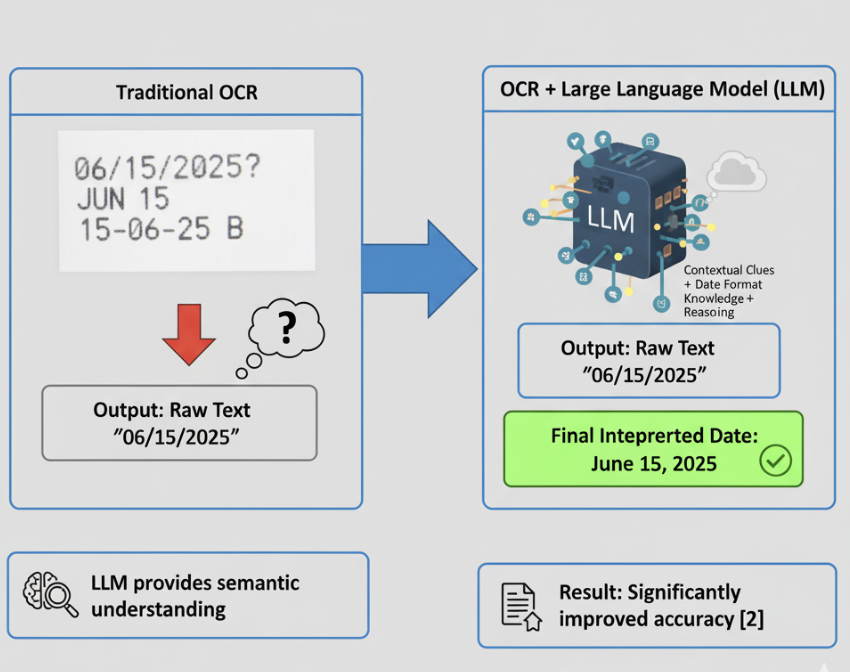

Voice Interaction & Evaluation
Designing accessible voice interfaces and evaluating assistive technologies
Voice Interface Design & Evaluation
Why Voice Matters
For blind and visually impaired users, voice is the fastest and most natural way to receive information from a system. Screen readers already dominate accessibility tools, but when it comes to food labels, there are special challenges:
Overwhelming Information
Reading an entire nutrition label word-for-word is overwhelming and time-consuming.
Focused Answers
Users need focused answers, not paragraphs of text.
Independence
Independence depends on being able to ask specific questions and receive direct, spoken responses.
Example
Instead of:
"Calories 120, Fat 2g, Sodium 210mg, Carbohydrates 23g, Sugars 12g, Protein 3g…"
A blind user may simply want to ask:
"How many calories?"
…and the system should respond clearly:
"120 calories per serving."
Design Principles for Accessible Voice
To design effective voice interaction, systems should follow three principles:
Voice Queries
Natural language commands should be supported.
Example queries:
- "What are the allergens?"
- "When does this expire?"
- "Read the nutrition facts."
Clear and Concise Responses
Long outputs are confusing.
Example responses:
- "Contains milk and soy."
- "Best before June 25, 2025."
Follow-Up Support
Users should not restart every time.
After "Read nutrition facts," a user could follow with:
- "What about sugar?"
- "How much protein?"
This conversational flow reduces cognitive load and makes the interaction feel natural.
Research Insight: OCR + LLM Integration
Research Finding

Grumeza et al. (2024) demonstrated that combining OCR with Large Language Models (LLMs) significantly improves how expiry dates are understood [2].
Problem
Expiry dates often appear in inconsistent formats:
- "06/25"
- "Best by 25/06/2025"
- "Use before June 2025"
Solution
OCR extracts the raw text, while an LLM interprets the context.
OCR + LLM
Result
The system can correctly explain "06/25" as June 2025 instead of the 25th of June.
Key Takeaway
This is a major advancement because it shows that voice access must go beyond text-to-speech. It requires intelligent interpretation so users get the correct meaning, not just a literal reading.
Evaluation of Assistive Tools
Why Evaluation Matters
Building a strong OCR pipeline is only half the story. If the user interface is confusing or the system is too slow, blind and visually impaired users cannot rely on it in daily life. This is why evaluation through usability studies is critical: it reveals what actually helps users, beyond raw accuracy numbers.
Algorithms ≠ Usability
A perfect OCR model is useless if it overwhelms users with long text.
Real-world Testing
Supermarkets are noisy, labels vary, and users need results instantly.
Accessibility-first Design
Simplicity often wins over complexity.
Research: Evaluating Current Apps
Bhagat et al. (2023) conducted an accessibility evaluation of widely used mobile tools [4]:
Seeing AI
(Microsoft)
Lookout
(Google)
Envision AI
(Independent app)
Key Findings from App Evaluation
Preference for Summaries
Users preferred fast, reliable summaries instead of having every word read aloud.
Speed Over Accuracy
Response speed mattered more than recognition accuracy.
Navigation Simplicity
Navigation simplicity improved accessibility.
Key Takeaway
Evaluating assistive apps shows that accessibility success is not defined by OCR accuracy alone. It depends on:
Speed
Users need instant results.
Clarity
Short, meaningful summaries are preferred.
Simplicity
Easy navigation builds independence.
Final Insight
In short, designing for accessibility means optimizing the entire user experience, not just the underlying recognition engine.
Voice access in accessible food label reading is about providing dialogue, not monologue.
Test Your Knowledge
Ready to test your understanding of voice interaction design and evaluation?
Take this quick 2-question quiz to reinforce what you've learned.
Quiz: Voice Interaction Design
Prototype A: 95% accurate but takes 12 seconds to respond.
Prototype B: 90% accurate but responds instantly.
Based on Bhagat et al. (2023), which would likely be rated higher by users?